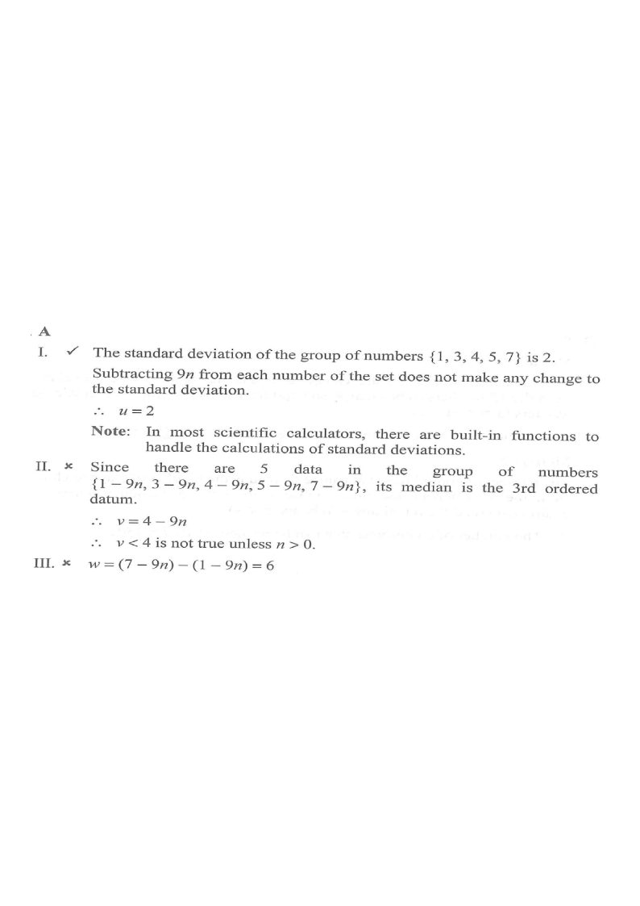

Step 1 — Five numbers, all shifted by the same amount $-9n$.
HKDSE 2023 Paper 2 · Q45
It is given that $n$ is an integer. Let $u$, $v$ and $w$ be the standard deviation, the median and the range of the group of numbers
$\{1-9n,\;3-9n,\;4-9n,\;5-9n,\;7-9n\}$ respectively. Which of the following must be true?
I. $\;u=2$
II. $\;v<4$
III. $\;w>6$
A. I only
B. II only
C. I and III only
D. II and III only

Figure (original exam diagram)
1Recognise the structure
The set is
\[
\{1-9n,\;3-9n,\;4-9n,\;5-9n,\;7-9n\}.
\]
Every entry equals a base number minus the same quantity $9n$. So the whole set is just the base set
\[
B=\{1,3,4,5,7\}
\]
shifted by $-9n$.
A common shift of all data moves the median and changes the range? — check carefully: shifting does not change the standard deviation or the range, but it does move the median.
2Statement I — standard deviation $u$
Adding/subtracting the same constant to every datum does not change the standard deviation. Hence $u$ = standard deviation of $\{1,3,4,5,7\}$.
Key idea: subtracting $9n$ from every number only slides the data along the axis — spread (and therefore SD) is unchanged.
Effect of Adding a Constant on the Standard Deviation\(\text{s.d.}(x-c)=\text{s.d.}(x)\)Every value of \(\{1-9n,3-9n,4-9n,5-9n,7-9n\}\) is the base value shifted by \(-9n\), so \(u\) equals the s.d. of \(\{1,3,4,5,7\}\).
3Statement II — median $v$
Arranged in order, the five numbers are
\[
1-9n,\;3-9n,\;\underline{4-9n},\;5-9n,\;7-9n .
\]
The $3^{\text{rd}}$ ordered datum is the median, so
\[
v = 4-9n .
\]
The claim $v<4$ becomes $4-9n<4$, i.e. $9n>0$, i.e. $n>0$.
But $n$ is any integer — e.g. $n=0$ gives $v=4$ (not $<4$), and $n=-1$ gives $v=13>4$.
II is NOT always true.
$v$ depends on $n$; a statement that holds only for $n>0$ cannot "must be true".
Median of an Ordered Data Set\(v=\text{middle value}=4-9n\)The third of the five ordered values is \(4-9n\), and \(4-9n<4\) only when \(n>0\).
4Statement III — range $w$
The range is the largest minus the smallest value:
\[
w=(7-9n)-(1-9n)=7-9n-1+9n=6 .
\]
So $w=6$ exactly, which is not greater than $6$.
III is NOT true.
Again, the common shift $-9n$ cancels in the subtraction, leaving the base range $7-1=6$.
Range\(w=\max-\min\)The shift \(-9n\) cancels: \(w=(7-9n)-(1-9n)=6\), which is not greater than \(6\).
5Conclusion
Only statement I must be true.
The correct option is A.
Answer: A (I only)
PRACTICESimilar question — try it yourself
Question. Consider the set \(\{2-4n,\ 5-4n,\ 6-4n,\ 8-4n,\ 9-4n\}\), where \(n\) is an integer. Let \(u\), \(v\) and \(w\) be the standard deviation, the median and the range of the set. Which of the following must be true? I. \(u=\sqrt{6}\) II. \(v>6\) III. \(w>7\)
Show the worked solution
Step 1. Every value is a base value of \(\{2,5,6,8,9\}\) shifted by \(-4n\), so the standard deviation and the range are those of the base set.
Step 2. Mean of \(\{2,5,6,8,9\}=\dfrac{30}{5}=6\); deviations are \(-4,-1,0,2,3\), so the variance is \(\dfrac{16+1+0+4+9}{5}=6\) and \(u=\sqrt{6}\). I is true.
Step 3. The median is the third ordered value, \(6-4n\). Then \(v>6\) means \(6-4n>6\), i.e. \(n<0\), which fails for \(n=0\) and \(n=1\). II is not always true.
Step 4. The range is \(w=(9-4n)-(2-4n)=7\), which is not greater than \(7\). III is false.